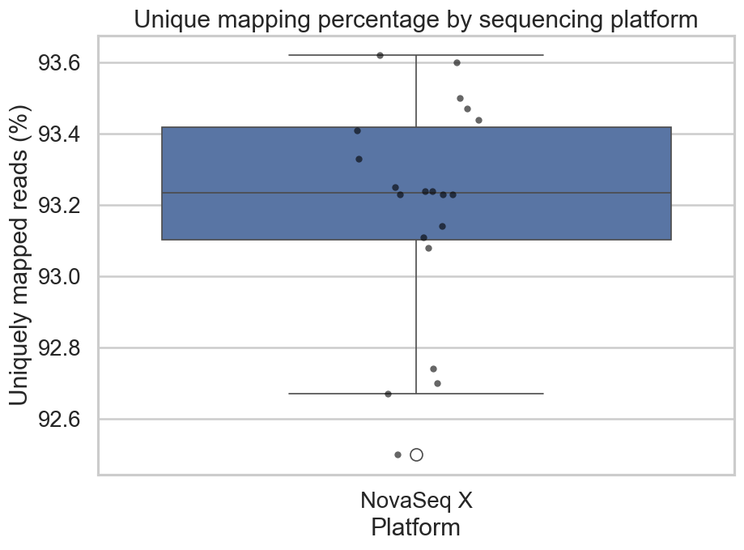
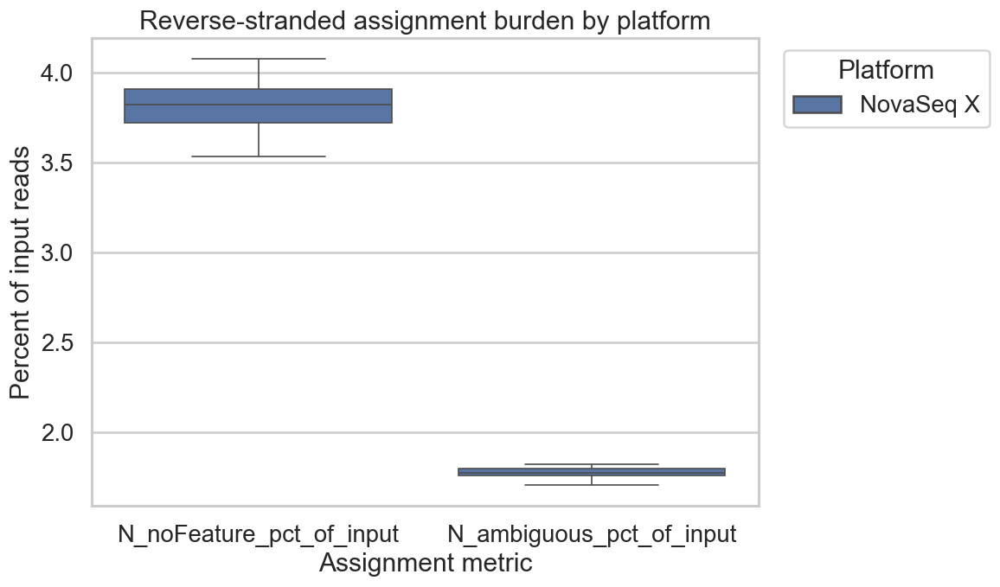

Mouse RNA-Seq — Alignment & Differential Expression (SRP618841)
What I accomplished since the previous report
This week we moved to the new mouse dataset (SRP618841) and started deciding which result should guide the next report and draft 1. We checked STAR alignment QC, reviewed the differential-expression contrasts, and I selected a result hierarchy to evaluate with the team for the next stage of writing. The side-specific DRG contrasts remain the strongest signal in this dataset, and geno_in_contra is the strongest supporting genotype branch, a cleaner basis for next week’s draft 1 preparation.


Left plot (unique mapping by platform): median unique mapping is 93.24% (IQR 93.10–93.42%), with median multi-mapping 5.10%. Right plot (assignment burden by platform): reverse-stranded assignment burden is low (~3.82% noFeature, ~1.77% ambiguous). Together, these support reading the downstream PCA and DE patterns as biological signal rather than alignment failure.
The bend-point cutoff is a narrowing rule derived from the raw ordered-p-value cumulative curve (not an FDR replacement). It is used to choose downstream gene sets for enrichment and story selection when a simple padj ≤ 0.05 cutoff yields an impractically large list.
| Contrast | Role | Bend-point p | Genes (n) |
|---|---|---|---|
ipsi_vs_contra_in_ff |
Main side (primary) | 1.37e-17 |
709 |
ipsi_vs_contra_in_cre |
Main side (alt) | 8.40e-17 |
870 |
geno_in_contra |
Genotype (support) | 2.13e-4 |
267 |
geno_in_ipsi |
Genotype (explore) | 1.43e-2 |
113 |
interaction |
Interaction (explore) | 4.56e-2 |
1,823 |
Following class discussion, I used a PCA-first reading and a reproducible bend-point (elbow) threshold on the ordered-p-value cumulative curve to narrow large DE lists into smaller downstream sets. The thresholds and resulting gene-set sizes are summarized here to help the team choose the main story and supporting context.
Selected outputs for this report: the alignment checkpoint plus Figures 1–4. Together they show dataset structure, the main side-specific contrast, the strongest supporting genotype branch, and enrichment used to interpret the DE results.
mouse_new DRG family

| Side class | Closest ff/cre pair |
PCA distance | Note |
|---|---|---|---|
| ipsi | SRR35329986 vs SRR35329987 | 0.27 | Near overlap (ipsi) |
| ipsi | SRR35329984 vs SRR35329987 | 0.67 | Near overlap (ipsi) |
| contra | SRR35329980 vs SRR35329988 | 1.18 | Near overlap (contra) |
This PCA is the correct first read because it shows baseline structure before gene-level filtering. In Figure 1, separation by side is clearer than separation by genotype, and the collision summary confirms that some ff/cre pairs are genuinely close in PCA space. For this reason, genotype is treated as secondary in this report.

geno_in_contra
Figure 2 shows the main side-specific contrast (ipsi_vs_contra_in_ff) after bend-point narrowing and supports it as the primary story candidate without relying on an arbitrary top-N cutoff. Here, padj ≤ 0.05 yields 7,023 genes, and the bend-point selects a 709-gene core. Figure 3 shows the strongest genotype-specific supporting branch (geno_in_contra): 891 genes at padj ≤ 0.05, narrowed to a 267-gene core. This branch remains supporting context, while the side-specific DE signal remains central.

Figure 4 summarizes enrichment for the main side-specific contrast. GO:BP provides most of the signal, with smaller contributions from KEGG and Reactome. The main themes remain broad regulation, signaling, and development/localization. Enrichment is used here as support for interpretation, not as a replacement for direct reading of the DE contrast.
Methods used
This report uses the same DESeq2 framework as previous reports, but the focus here is interpretation rather than procedure. We used PCA as the first check, compared signal strength across contrasts, and applied an ordered-p-value / cumulative bend-point method to narrow large gene lists into smaller downstream sets for enrichment and story selection. The ordered-p-value cumulative curve shown at right for ipsi_vs_contra_in_ff is the diagnostic used to set the bend-point cutoff.
Repro (from Semester5/BIOL550/group_project/):
jupyter nbconvert --execute --to notebook --inplace \
mouse_new/notebooks/mouse_differential_expression_all20.ipynb
Canonical notebook + derived outputs:
- notebook: mouse_new/notebooks/mouse_differential_expression_all20.ipynb
- derived outputs: mouse_new/differential_expression_all20/derived_analysis/
- signal summary: mouse_new/differential_expression_all20/derived_analysis/analysis_summary.tsv
Family + DESeq2 model (from the family manifest):
- family: family_drg_novaseqx (20 samples)
- design: ~ side_class + geno_class + side_class:geno_class
Contrasts reviewed in this report:
- ipsi_vs_contra_in_ff
- ipsi_vs_contra_in_cre
- geno_in_contra
- geno_in_ipsi
- interaction
- PCA is read first to separate baseline sample structure from contrast-specific signal.
- Bend-point filtering defines smaller follow-up sets from large significant-gene lists.
- Enrichment (GO / KEGG / Reactome via g:Profiler) is used after the main contrast is understood.
- The goal is to choose a defensible story for the report and for Draft 1.
Problems encountered
The main challenge this week was deciding how to interpret the DE results without forcing a misleading story. The raw significant-gene lists were too large to use directly, and the genotype signal was easy to over-interpret if read without first checking PCA structure. We also had to decide which figures clarified the data and which ones repeated the same point.
We addressed this by using PCA-first interpretation, bend-point-based narrowing, and more selective figure choices. This keeps the side-specific DRG contrasts central, retains geno_in_contra as supporting context, and treats the weaker genotype and interaction branches as exploratory.
Goals for the coming week
Next week the main goal is to turn this DE analysis into a clear starting point for Draft 1. The strongest claim candidate is now clearer: the side-specific DRG signal is the main story, and geno_in_contra is the best supporting branch. We should keep using the PCA-first, bend-point-guided structure so the report and the paper draft stay aligned.
- Choose which side-specific contrast should be the main figure for the next weekly report and Draft 1.
- Keep
geno_in_contraas the main supporting genotype branch and avoid over-centeringgeno_in_ipsiorinteraction. - Use the bend-point-selected gene sets and enrichment plots to identify the clearest biological themes for Draft 1.
- Carry this structure directly into the Draft 1 outline so the report and paper stay aligned.